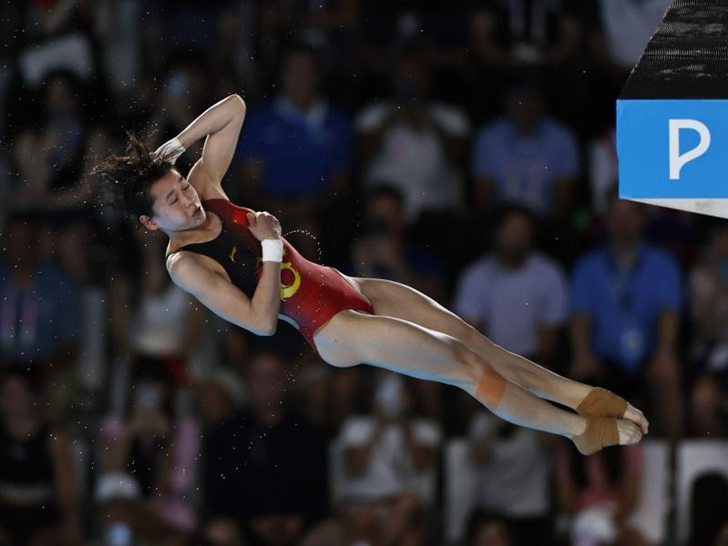

巴黎奥运6日举行跳水女子10公尺台决赛，东京奥运该项目冠军得主、中国选手全红婵成功卫冕，她的队友陈芋汐获得亚军。这是中国体育代表团在巴黎奥运获得的第22枚金牌，跳水项目已经决出的5枚金牌全被中国队获得。这也是全红婵在巴黎奥运获得的第2金，此前她搭档陈芋汐在女子双人10公尺台项目中夺冠。
据封面新闻报导，全红婵也打破了伏明霞的纪录，以17岁131天成为中国奥运史上最年轻的三金王。值得一提的是，上一个在这个项目奥运会卫冕的正是她的教练陈若琳。
巴黎奥运热话题
- 拜尔丝向她鞠躬 巴西金牌安德拉德 从贫民窟走向女王
- 郑钦文备战北美赛季 无缘担任中国队闭幕式掌旗官
- 感人瞬间 中国何冰娇摘银 颁奖台上却秀了西班牙徽章
- 美国队莱尔斯「龟派气功」庆夺金 日媒：跑最快的动漫迷
- 男足／法国、西班牙争金 摩洛哥与埃及抢铜牌